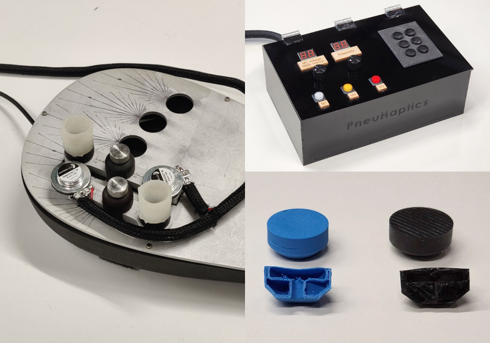

Multimodal Feedback Paradigms
Master's thesis at Johns Hopkins
Overview
Innovating paradigms multimodal feedback in augmenting perception and rehabilitation.
Role
Master's Thesis Researcher
Advisor
Jeremy D. Brown, PhD, Principal Investigator
Timeline
January 2024 to Present

Background
Human Haptics
Touch plays a crucial role in guiding and refining movement, serving as a bridge between the body and its environment. Mechanoreceptors in the skin provide real-time feedback about pressure, texture, and vibration, enabling precise adjustments to motor actions. This sensory input is particularly important for tasks requiring fine motor control, such as gripping an object or navigating uneven terrain. Additionally, touch-based feedback enhances proprioception, the body's sense of position, which is vital for maintaining balance and coordination. Haptics, the science and technology of touch-based communication, leverages this sensory pathway to design systems that replicate or augment tactile experiences. From rehabilitation to robotics, understanding the interplay between touch, movement, and haptics is central to advancing human-machine interaction and motor recovery therapies.
Overview
Major Thesis Focus
Haptic integration can provide essential feedback to guide fine motor control and coordination. This understanding forms the foundation of my master’s thesis at Johns Hopkins University, where I focus on two broad projects that leverage touch to improve human health and performance.
- Finger Rehabilitation After Stroke: I am developing a virtual task-based rehabilitation device to enhance post-stroke finger dexterity, leveraging precise 3D force sensing and multimodal visual-haptic feedback.
- Pneumatactors for Human-Machine Interaction: I created pneumatactors to provide personalized, multisensory feedback systems that reduce cognitive load and improve communication efficiency in high-demand scenarios, such as robotics and prosthetics.
Rehabilitation Robotics
Finger Rehabilitation After Stroke
Read More
My work in finger rehabilitation focuses on building innovative, multimodal feedback systems that combine visual and haptic cues to enhance sensorimotor recovery. Using precise force sensing and voice coil-based haptic technology, my studies have demonstrated significant improvements in motor outcomes, showcasing the transformative potential of integrated sensory feedback. By tailoring feedback to individual sensory perception, I aim to address the variability in post-stroke deficits and personalize therapy for better outcomes. This work not only advances stroke rehabilitation technology but also contributes to the broader understanding of how touch can drive functional recovery in neurorehabilitation.
BMES - Abstract
Novel Multimodal Interfaces
Pneumatactors
Read More
I created “pneumatactors,” a novel pneumatic haptic interface designed to deliver co-located stimulation of both fast and slow-adapting mechanoreceptors. These devices enhance cognitive salience by providing intuitive, naturalistic feedback that closely mimics the mechanical properties of human skin. Pneumatactors represent a breakthrough in low-bandwidth haptic feedback, offering a more effective solution compared to existing technologies. By integrating this innovation into prosthetic systems, I aim to advance the field of human-machine interaction, improving sensory experiences and functionality for users.
IEEE Haptics Symposium - WIP PaperIEEE Haptics Symposium - Poster